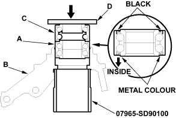
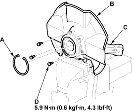
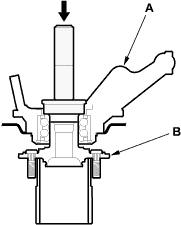

- Wash the knuckle and hub thoroughly in high flash point solvent before reassembly.
- Press a new wheel bearing (A) into the knuckle (B) using the old bearing (C), a steel plate (D), the special tool and a press. Place the wheel bearing on the knuckle with the pack seal side facing (metal colour) toward the inside. Be careful not to damage the sleeve of the pack seal.

- Install the snap ring (A) securely in the knuckle (B).

- Install the splash guard (C) and tighten the screws (D) to the specified torque.

- Press a new hub bearing unit (A) onto the hub (B) using the special tools and a press.

- Install the knuckle/hub/hub bearing unit in the reverse order of removal, and note these items:
- Be careful not to damage the ball joint boot when installing the knuckle.
- Tighten all mounting hardware to the specified torque values.
- Torque the castle nut to the lower torque specification, then tighten it only far enough to align the slot with the clip hole. Do not align the castle nut by loosening it.
- Install a new clip on the castle nut after torquing.
- Use a new spindle nut on reassembly.
- Before installing the spindle nut, apply a small amount of engine oil to the seating surface of the nut. After tightening, use a drift to stake the spindle nut shoulder against the driveshaft.
- Before installing the brake disc, clean the mating surface of the front hub and the inside of the brake disc.
- Before installing the wheel, clean the mating surface of the brake disc and the inside of the wheel.
- Check the front wheel alignment and adjust it if necessary, refer to the 2001 Civic Shop Manual (see page 18-4).